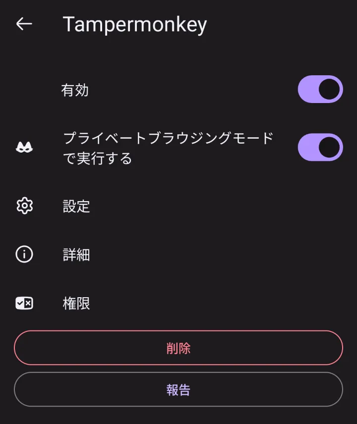
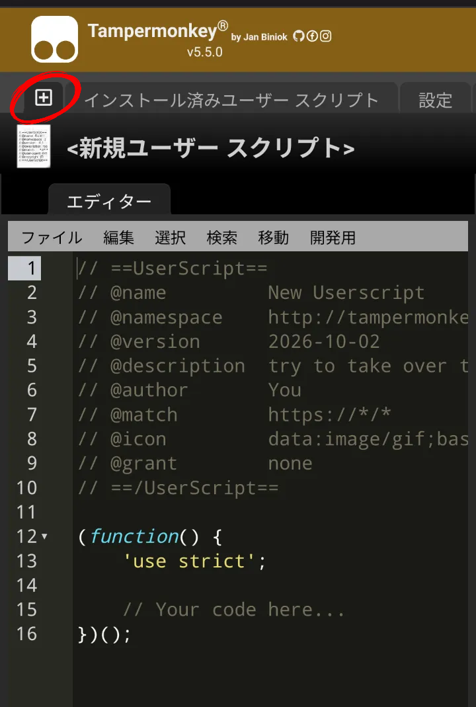
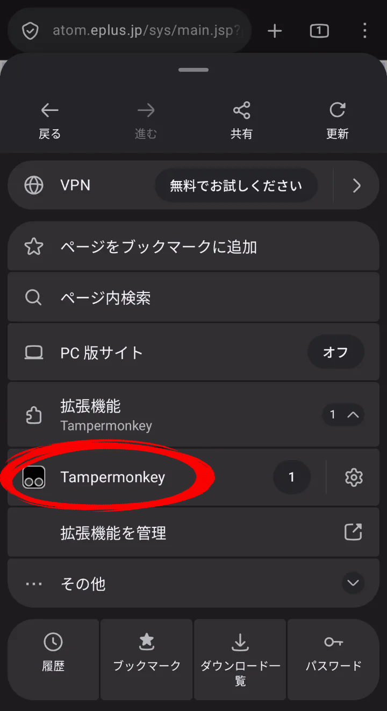
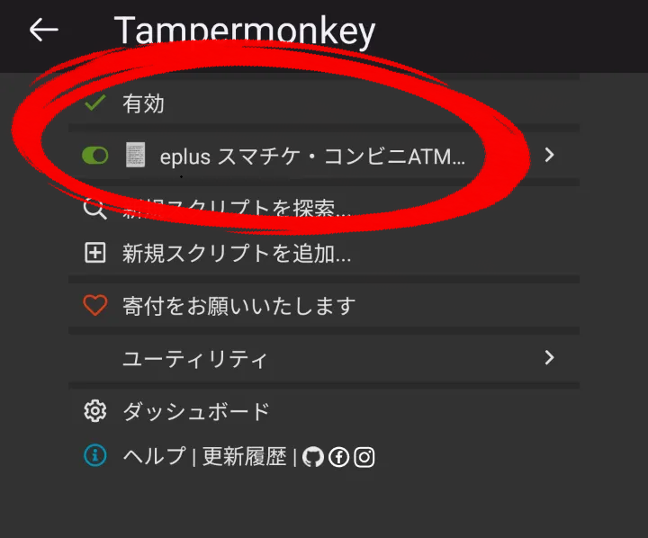

1
Tampermonkeyをインストールして有効化
Firefoxの拡張機能から追加し、利用設定を確認します。

インストール後、メニュー ＞ 拡張機能 ＞ Tampermonkeyを開き、「有効」と「プライベートモードでも有効」をオンにします。
Tampermonkey for FirefoxFirefox Add-onsからインストール
開く ↗
2
新規Scriptを作成してコードを貼り付ける
Tampermonkeyの設定画面から新しいスクリプトを作成します。

メニュー ＞ 拡張機能 ＞ Tampermonkey ＞ 設定を開き、「＋」ボタンで新規Scriptを作成します。下のコードを貼り付けて保存してください。
貼り付けるUserScript
// ==UserScript==
// @name eplus スマチケ・コンビニATMを選んで確定
// @namespace https://userscripts.app/
// @version 1.0
// @description スマチケとコンビニ／ATMを選択して次へ進みます。
// @author You
// @match https://atom.eplus.jp/sys/main.jsp*
// @run-at document-start
// @grant none
// ==/UserScript==
(function () {
'use strict';
let done = false;
function trySubmit() {
if (done) return;
const receive = document.querySelector(
'input[name="vuketoriHohoSentaku"][value="7"]'
);
const payment = document.querySelector(
'input[name="vsiharaiHohoSentaku"][value="3"]'
);
const frm = document.mainForm;
if (!receive || !payment || !frm || !frm['uji.anchorVerb']) return;
done = true;
observer.disconnect();
receive.checked = true;
payment.checked = true;
frm['uji.anchorVerb'].name = 'GB1112_HENKOU';
frm.submit();
}
const observer = new MutationObserver(trySubmit);
observer.observe(document, { childList: true, subtree: true });
trySubmit();
})();このスクリプトは、指定されたeplusページ上で受取方法・支払方法を選択してフォームを送信する内容です。内容を確認したうえで使用してください。
3
対象サイトでScriptが有効か確認
スクリプトを発動させたいドメインを開き、Tampermonkeyの状態を確認します。


画面やメニューの表示は、FirefoxやTampermonkeyのバージョンによって異なる場合があります。